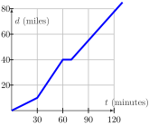
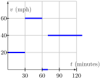

Print preview
Handout Daily Prep 1.1 - Average Velocity
Section Overview
This section discusses the following concepts: Average velocity. Slope of a secant line. Instantaneous velocity.
Section Basic learning objectives
These are the tasks you should be able to perform with reasonable fluency when you arrive at our next class meeting. Important new vocabulary words are indicated in italics.
-
Determine the position of an object at a specific time given a position function for the object.
-
Compute the average velocity of an object on a specific time interval.
-
State the units of the average velocity of an object.
Section To prepare for class
Complete all actions listed below. Respond to the questions highlighted with Submit.
A single .pdf should be uploaded to D2L Brightspace. See the syllabus for grading rubric. It is not necessary to re-state the questions. Instead, simply enumerate your responses clearly. Strive to use valid notation and correct mathematical language and syntax. All answers should be briefly justified, whether justification is specifically requested or not.
-
Read the motivating questions and introduction to Section 1.1 (up to Preview Activity 1.1.1).
-
[SUBMIT] Do Preview Activity 1.1.1.
-
(Optional) Watch a video solution using Desmos to Preview Activity 1.1.1 (5:48).
-
-
Read Section 1.1.1.
-
Watch video Using the Average Velocity Formula (7:38).
-
[SUBMIT] Watch video Alternative Average Velocity Formula (11:05).
-
What is the expression for \(s(0.2+h)\) calculated in the video? [Hint: It is written in blue ink at about the 9 minute mark.]
-
How does this expression compare to \(s(0.2)+h\text{?}\) Is it the same? If so, why? If not, why not?
-
-
Do the following exercises. [Note: Answers are provided below.]
-
Katherine takes a trip from Saint Cloud to Minneapolis. Due to road construction, she drives the first 10 miles at a constant speed of 20 MPH. For the next 30 miles she maintains a constant speed of 60 MPH and then stops at McDonald’s for 10 minutes for a snack. She drives the next 45 miles at a constant speed of 45 MPH.
-
Draw and label a graph which shows her distance \(d\) along the road from her starting point as a function of time \(t\text{.}\)
-
What is her average speed for the trip (including the stop at McDonald’s)?
-
-
Katherine takes another trip. She travels for 30 miles with an average velocity of 40 MPH, and then for 30 minutes at 60 MPH. What is her average velocity for the 60-mile trip?
-
Dale travels for 30 minutes at 40 MPH and then for 30 minutes at 60 MPH. Find Dale’s average velocity in the one hour period.
-
A car is to travel two miles. It goes the first mile at an average velocity of 30 MPH. The driver wishes to average 60 MPH for the entire two-mile trip. Is this possible? Explain.
-
We look at the speed of a grapefruit that is thrown straight upward into the air at \(t=0\) seconds.

Figure 10. Height of a grapefruit over time. The grapefruit leaves the thrower’s hand at high speed, slows down until it reaches its maximum height, and then speeds up in the downward direction and finally, “Splat!”.Table 11. Height of the grapefruit above the ground. \(t\) (sec) 0 1 2 3 4 5 6 \(y\) (feet) 6 90 142 162 150 106 30 -
Did the grapefruit travel faster over the first interval \(0 \leq t \leq 1\) or the second interval \(1 \leq t \leq 2\text{?}\)
-
Compute the average velocity of the grapefruit over the interval \(4 \leq t \leq 5\text{.}\) What is the significance of the sign of your answer?
-
The grapefruit traveled faster over the first interval \(0 \leq t \leq 1\) than the second interval \(1 \leq t \leq 2\text{.}\) If the data in the table can be modeled by \(y=6+100t-16t^{2}\text{,}\) fill in the table below to estimate the value of the instantaneous velocity at time \(t=1\) second. Then, give an expression for the average velocity \(AV_{[a,a+h]}\) of the grapefruit on the time interval \([a,a+h]\text{.}\)
Table 12. Average velocity of the grapefruit over various time intervals. Time Interval Average Velocity [1,1.5] [1,1.1] [1,1.01] [1,1.001] [1,1.0001] [0.999,1] [0.9999,1]
-
-
-
[SUBMIT] Explore the applet Average Velocity which distinguishes velocity and speed. Answer all five questions posed to you.
Section After class
Solidifying the concepts discussed in class through practice is necessary to build your skills. Mathematics is not a spectator sport!
-
Read Section 1.1.2.
-
Watch video Finding Instantaneous Velocity (14:02).
-
Prompt Copilot “Use mathematical notation to give the precise relationship between instantaneous velocity and average velocity.”
-
Prompt Copilot “How is delta notation used in calculus?”
-
Do the following exercise.
-
Do exercises 1-5 in section 1.1.4 of the text. These are interactive WebWork exercises intended to give you instantaneous feedback.
-
Read summary in Section 1.1.3.
-
Do written exercises 6-8 in section 1.1.4 of the text.
Section Advanced learning objectives
In addition to mastering the basic objectives, here are the tasks you should be able to perform after class, with practice:
-
Interpret average velocity graphically.
-
Differentiate between instantaneous velocity and average velocity.
-
Determine the average velocity of an object on an interval starting at time \(t=a\) and ending at time \(t=a+h\text{,}\) where \(a\) is given but \(h\) is a variable. Express the result in simplest form as a function of \(h\text{.}\)
-
Determine the instantaneous velocity at the single moment \(t=a\) given the average velocity of an object from time \(t=a\) to time \(t=a+h\text{.}\)
Section Additional suggestions
-
Do some experimentation with the following applet: Average and Instantaneous Rate of Change. Attempt to answer all of the questions on the website.
-
Explore an Average Rate of Change of a Function Applet.
-
Watch video Average Velocity of Two Cars (5:04).
-
Watch video Average Rates of Change (7:50).
Section Answers
-
-
Don’t confuse Katherine’s distance with her velocity.
Figure 13. Katherine’s distance vs. time. -

Figure 14. Katherine’s velocity vs. time. -
Katherine’s average speed is \(\displaystyle v = \frac{85 \ {miles}}{130 \ {min}}\cdot \frac{60 \ {min}}{1 \ {hr}}\approx 39.23\) mph.
-
-
Velocity is distance divided by time. That is, \(\displaystyle v = \frac{d}{t}\text{.}\)For the first leg of her trip, the time taken is \(t_{1} = 0.75\) hours.For the second leg of her trip, the distance traveled is \(d_{2} = 30\) miles.This information is useful in computing the total distance and the total time for the whole trip. The total distance is 30 + 30 or 60 miles. The total time taken is 0.75 + 0.5 = 1.25 hours.So, her average velocity is \(v = \frac{60 \ {miles}}{1.25 \ {hour}}= 48\) mph.
-
The first leg of Dale’s trip is 20 miles. The second leg of Dale’s trip is 30 miles.So, the average velocity on his trip is \(v = \frac{50 \ {miles}}{1 \ {hour}}= 50\) mph.
-
In order to average 60 mph for the entire trip, the total time taken should be \(\displaystyle t = \frac{2 \ {miles}}{60 \ {mph}}= \frac{1}{30}\) or 2 minutes.But, the first leg of the trip takes \(\displaystyle t = \frac{1 \ {mile}}{30 \ {mph}}=\) 2 minutes. So it is impossible to average this velocity since it will take a positive amount of time to travel the second mile.
-
-
The velocity on \(0 \leq t \leq 1\) is \(\displaystyle \frac{\Delta y}{\Delta t}= \frac{90-6}{1-0}= 84\) ft/sec.The velocity on \(1 \leq t \leq 2\) is \(\displaystyle \frac{\Delta y}{\Delta t}= \frac{142-90}{2-1}= 52\) ft/sec.The grapefruit traveled faster over the time interval \(0 \leq t \leq 1\text{.}\)
-
The average velocity on \([4,5]\) is \(\displaystyle \frac{\Delta y}{\Delta t}= \frac{106-150}{5-4}= -44\) ft/sec. The negative sign tells us the grapefruit is travelling downward.
-
The instantaneous velocity at time \(t=1\) is approximately 68 ft/sec.
Table 15. Average velocities of the grapefruit on various intervals computed. Time Interval Average Velocity [1,1.5] 60 ft/sec [1,1.1] 66.4 ft/sec [1,1.01] 67.84 ft/sec [1,1.001] 67.984 ft/sec [1,1.0001] 67.9984 ft/sec [0.999,1] 68.016 ft/sec [0.9999,1] 68.0016 ft/sec
-